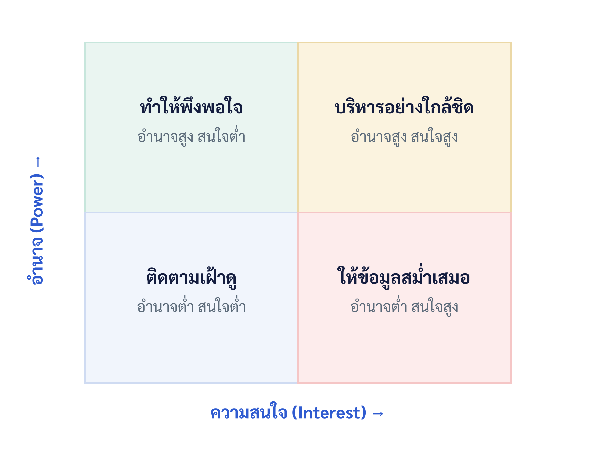

บทที่ 4 การวิเคราะห์ผู้มีส่วนได้ส่วนเสีย การคัดเลือกและจัดลำดับโครงการ
เมื่อศึกษาบทนี้จบแล้ว นิสิตสามารถ
- อธิบายความหมาย ประเภท และความสำคัญของผู้มีส่วนได้ส่วนเสียของโครงการได้
- ระบุผู้มีส่วนได้ส่วนเสียและจัดทำทะเบียนผู้มีส่วนได้ส่วนเสียได้
- จำแนกผู้มีส่วนได้ส่วนเสียด้วย Power–Interest Grid แบบจำลอง Salience และเครื่องมืออื่นได้
- กำหนดกลยุทธ์การมีส่วนร่วม การสื่อสาร และการสร้างความไว้วางใจที่เหมาะสมกับแต่ละกลุ่มได้
- อธิบายวิธีการคัดเลือกและจัดลำดับความสำคัญของโครงการทั้งเชิงการเงินและเชิงกลยุทธ์ได้
- ใช้แบบจำลองการให้คะแนนถ่วงน้ำหนัก และอธิบายแนวคิดการวิเคราะห์เชิงลำดับชั้น (AHP) เบื้องต้นได้
- อธิบายการจัดสมดุลพอร์ตโฟลิโอโครงการ และประยุกต์กับโครงงานธุรกิจสมัยใหม่ได้
4.1 บทนำ
โครงการไม่ได้ดำเนินอยู่ในสุญญากาศ แต่อยู่ท่ามกลางผู้คนที่ได้รับผลกระทบและมีอิทธิพลต่อโครงการ ความสามารถในการเข้าใจและบริหารความสัมพันธ์กับ "ผู้มีส่วนได้ส่วนเสีย" เหล่านี้ มักเป็นปัจจัยชี้ขาดระหว่างความสำเร็จกับความล้มเหลว
บทนี้กล่าวถึงสองเรื่องที่เชื่อมโยงกัน เรื่องแรกคือการวิเคราะห์และบริหารผู้มีส่วนได้ส่วนเสีย เพื่อระบุ จำแนก วางแผนการมีส่วนร่วม สื่อสาร และสร้างความไว้วางใจกับผู้ที่เกี่ยวข้อง เรื่องที่สองคือการคัดเลือกและจัดลำดับความสำคัญของโครงการในระดับองค์กร เพื่อเลือกลงทุนในชุดโครงการที่สร้างคุณค่าสูงสุดภายใต้ทรัพยากรที่จำกัด ทั้งสองเรื่องต่างเป็นการตัดสินใจที่ต้องอาศัยข้อมูลและวิจารณญาณ (PMI, 2021) ปกรณ์ ปรียากร ชี้ว่าการได้รับการยอมรับและการสนับสนุนจากผู้ที่เกี่ยวข้องเป็นเงื่อนไขสำคัญที่ทำให้โครงการดำเนินไปได้อย่างราบรื่น (ปกรณ์ ปรียากร, 2553)
4.2 ความหมายและประเภทของผู้มีส่วนได้ส่วนเสีย
ผู้มีส่วนได้ส่วนเสีย (Stakeholders) หมายถึง บุคคล กลุ่ม หรือองค์กรที่ได้รับผลกระทบจากโครงการ มีผลกระทบต่อโครงการ หรือรับรู้ว่าตนได้รับผลจากโครงการ อาจจำแนกได้เป็นผู้มีส่วนได้ส่วนเสียภายใน เช่น ผู้สนับสนุนโครงการ (Sponsor) ทีมงาน ผู้บริหาร และผู้มีส่วนได้ส่วนเสียภายนอก เช่น ลูกค้า/ผู้ใช้ คู่ค้า หน่วยงานกำกับ ชุมชน และคู่แข่ง (Larson & Gray, 2021)
อีกวิธีจำแนกที่มีประโยชน์คือ การแยกระหว่างผู้มีส่วนได้ส่วนเสียหลัก (Primary) ที่มีความเกี่ยวข้องโดยตรงและได้รับผลกระทบสูง เช่น ผู้ใช้และผู้สนับสนุน กับผู้มีส่วนได้ส่วนเสียรอง (Secondary) ที่เกี่ยวข้องทางอ้อม เช่น ชุมชนหรือกลุ่มผลประโยชน์ การเข้าใจประเภทช่วยให้ทีมจัดสรรความสนใจได้อย่างเหมาะสม
ความสำคัญของการบริหารผู้มีส่วนได้ส่วนเสียอยู่ที่ว่า ความคาดหวังที่แตกต่างหรือขัดแย้งกันของแต่ละฝ่ายเป็นแหล่งความเสี่ยงและความขัดแย้งสำคัญ หากไม่ได้รับการบริหาร ความคาดหวังที่ไม่ตรงกันอาจนำไปสู่การต่อต้าน การเปลี่ยนขอบเขต หรือการปฏิเสธผลงานเมื่อส่งมอบ การระบุและมีส่วนร่วมกับผู้มีส่วนได้ส่วนเสียตั้งแต่ระยะเริ่มต้นจึงเป็นการลงทุนที่คุ้มค่า (Kerzner, 2022)
4.3 การระบุและจัดทำทะเบียนผู้มีส่วนได้ส่วนเสีย
การระบุผู้มีส่วนได้ส่วนเสียควรทำอย่างครอบคลุมตั้งแต่ต้นโครงการและทบทวนเป็นระยะ เทคนิคที่ใช้ ได้แก่ การระดมสมองของทีม การทบทวนเอกสารโครงการ การสัมภาษณ์ผู้เชี่ยวชาญ และการวิเคราะห์จากโครงการที่คล้ายกัน ข้อควรระวังคือ ผู้มีส่วนได้ส่วนเสียที่ถูกมองข้ามบ่อยที่สุดมักเป็นผู้ที่ไม่มีเสียงดังแต่ได้รับผลกระทบจริง เช่น ผู้ใช้ปลายทางหรือเจ้าหน้าที่ระดับปฏิบัติการ การระบุให้ครบถ้วนจึงต้องมองให้กว้างกว่าผู้ที่มีอำนาจ (Meredith et al., 2021)
ผลลัพธ์ถูกบันทึกใน "ทะเบียนผู้มีส่วนได้ส่วนเสีย" (Stakeholder Register) ซึ่งรวบรวมข้อมูลระบุตัวตน บทบาท ความสนใจ ความคาดหวัง ระดับอิทธิพล และกลยุทธ์การมีส่วนร่วม ดังตัวอย่างในตารางที่ 4.1 (PMI, 2017)
ตารางที่ 4.1 ตัวอย่างทะเบียนผู้มีส่วนได้ส่วนเสีย (บางส่วน)
| ผู้มีส่วนได้ส่วนเสีย | ความสนใจ/ความคาดหวัง | อำนาจ | ความสนใจ | กลยุทธ์ |
|---|---|---|---|---|
| อาจารย์ที่ปรึกษา | คุณภาพวิชาการและความก้าวหน้า | สูง | สูง | บริหารอย่างใกล้ชิด |
| ผู้ใช้เป้าหมาย | ผลิตภัณฑ์แก้ปัญหาได้จริง | ต่ำ | สูง | ให้ข้อมูลสม่ำเสมอ |
| เจ้าของธุรกิจพันธมิตร | ผลประโยชน์ทางธุรกิจ | สูง | ปานกลาง | ทำให้พึงพอใจ |
| สมาชิกในทีม | ภาระงานที่เป็นธรรมและการเรียนรู้ | ปานกลาง | สูง | บริหารอย่างใกล้ชิด |
4.4 การวิเคราะห์ด้วย Power–Interest Grid
เครื่องมือวิเคราะห์ที่นิยมที่สุดคือ ตารางอำนาจ-ความสนใจ (Power–Interest Grid) ซึ่งจำแนกผู้มีส่วนได้ส่วนเสียตามสองมิติ คือ ระดับอำนาจ (Power) ที่มีต่อโครงการ และระดับความสนใจ (Interest) ในผลของโครงการ ผลลัพธ์แบ่งเป็น 4 ควอดแรนต์ พร้อมกลยุทธ์การจัดการที่เหมาะสม ดังภาพที่ 4.1 (Larson & Gray, 2021)

ตารางที่ 4.2 กลยุทธ์ตาม Power–Interest Grid
| กลุ่ม | ลักษณะ | กลยุทธ์ |
|---|---|---|
| อำนาจสูง สนใจสูง | ผู้ตัดสินใจหลัก | บริหารอย่างใกล้ชิด ให้มีส่วนร่วมเต็มที่ |
| อำนาจสูง สนใจต่ำ | มีอิทธิพลแต่ยังไม่ใส่ใจ | ทำให้พึงพอใจ รายงานสรุปเป็นระยะ |
| อำนาจต่ำ สนใจสูง | ผู้ได้รับผลกระทบ/ผู้ใช้ | ให้ข้อมูลสม่ำเสมอ รับฟังความเห็น |
| อำนาจต่ำ สนใจต่ำ | เกี่ยวข้องน้อย | ติดตามเฝ้าดูด้วยความพยายามน้อย |
4.5 แบบจำลอง Salience และเครื่องมือวิเคราะห์อื่น
นอกจาก Power–Interest Grid แล้ว แบบจำลอง Salience ยังช่วยจัดลำดับความสำคัญของผู้มีส่วนได้ส่วนเสียด้วยสามคุณลักษณะ ได้แก่ อำนาจ (Power) ความชอบธรรม (Legitimacy) และความเร่งด่วน (Urgency) ผู้มีส่วนได้ส่วนเสียที่มีครบทั้งสามคุณลักษณะถือเป็นกลุ่มที่ต้องให้ความสำคัญสูงสุด (definitive stakeholder) ขณะที่ผู้มีเพียงคุณลักษณะเดียวมีความสำคัญน้อยลง แบบจำลองนี้ช่วยเสริม Power–Interest Grid โดยเพิ่มมิติความชอบธรรมและความเร่งด่วนเข้ามาพิจารณา (Kloppenborg et al., 2019)
เครื่องมืออื่นที่มีประโยชน์ ได้แก่ ลูกบาศก์ผู้มีส่วนได้ส่วนเสีย (Stakeholder Cube) ที่รวมสามมิติเข้าด้วยกัน และแบบจำลองทิศทางอิทธิพล (Directions of Influence) ที่จำแนกว่าผู้มีส่วนได้ส่วนเสียมีอิทธิพลจากบน ล่าง ข้าง หรือภายนอกโครงการ ไม่ว่าจะใช้เครื่องมือใด สิ่งสำคัญคือ ระดับอำนาจ ความสนใจ และความเร่งด่วนของผู้มีส่วนได้ส่วนเสียอาจเปลี่ยนแปลงตลอดอายุโครงการ การวิเคราะห์จึงต้องทบทวนเป็นระยะ ไม่ใช่ทำครั้งเดียวตอนเริ่มต้น (PMI, 2021)
4.6 การบริหารการมีส่วนร่วมและความคาดหวัง
หลังจำแนกกลุ่มแล้ว ขั้นต่อไปคือการวางแผนและดำเนินการให้ผู้มีส่วนได้ส่วนเสียมีส่วนร่วมในระดับที่เหมาะสม เครื่องมือหนึ่งคือ เมทริกซ์การประเมินการมีส่วนร่วม (Stakeholder Engagement Assessment Matrix) ที่เทียบระดับการมีส่วนร่วม "ปัจจุบัน" กับระดับที่ "ต้องการ" ตั้งแต่ไม่รับรู้ (Unaware) ต่อต้าน (Resistant) เป็นกลาง (Neutral) สนับสนุน (Supportive) ไปจนถึงนำ (Leading) เพื่อวางแผนปิดช่องว่าง โดยกำหนดกิจกรรมเจาะจงสำหรับผู้มีส่วนได้ส่วนเสียที่ยังอยู่ห่างจากระดับที่ต้องการ (PMI, 2021)
การบริหารความคาดหวังที่ดีต้องเริ่มจากการทำความเข้าใจว่าแต่ละฝ่ายต้องการอะไรและกลัวอะไร แล้วจัดการความคาดหวังให้สอดคล้องกับสิ่งที่โครงการส่งมอบได้จริง การให้คำมั่นเกินจริงเพื่อเอาใจผู้มีส่วนได้ส่วนเสียในระยะสั้นมักนำไปสู่ความผิดหวังในระยะยาว การสื่อสารอย่างตรงไปตรงมาเกี่ยวกับสิ่งที่ทำได้และทำไม่ได้จึงเป็นแนวทางที่ยั่งยืนกว่า (Shenhar & Dvir, 2007)
4.7 การสื่อสารและการสร้างความไว้วางใจ
การมีส่วนร่วมที่มีประสิทธิภาพตั้งอยู่บนการสื่อสารสองทางอย่างสม่ำเสมอและความไว้วางใจ การสื่อสารที่ดีต้องปรับเนื้อหา ช่องทาง และความถี่ให้เหมาะกับผู้มีส่วนได้ส่วนเสียแต่ละกลุ่ม (รายละเอียดการวางแผนการสื่อสารอยู่ในบทที่ 11) ความไว้วางใจสร้างได้จากการทำตามที่พูด ความโปร่งใสในการรายงานทั้งความก้าวหน้าและปัญหา การรับฟังอย่างตั้งใจ และการจัดการความขัดแย้งอย่างสร้างสรรค์ (Kerzner, 2022)
ความไว้วางใจเป็นทุนสำคัญที่ช่วยให้โครงการผ่านช่วงยากลำบากไปได้ เมื่อเกิดปัญหา ผู้มีส่วนได้ส่วนเสียที่ไว้วางใจทีมจะให้เวลาและการสนับสนุนในการแก้ไข ขณะที่ผู้ที่ขาดความไว้วางใจอาจตอบสนองด้วยการตำหนิหรือถอนการสนับสนุน การลงทุนสร้างความสัมพันธ์ที่ดีตั้งแต่ต้นจึงเป็นการบริหารความเสี่ยงรูปแบบหนึ่ง สำหรับโครงงานของนิสิต การรายงานความก้าวหน้าต่ออาจารย์ที่ปรึกษาอย่างสม่ำเสมอและการดึงผู้ใช้เข้ามามีส่วนร่วมตั้งแต่ต้น ช่วยสร้างความไว้วางใจและได้รับข้อมูลป้อนกลับที่มีค่า
4.8 การคัดเลือกและจัดลำดับความสำคัญของโครงการ
ในระดับองค์กร ทรัพยากรมีจำกัดขณะที่แนวคิดโครงการมีมากมาย การคัดเลือกและจัดลำดับความสำคัญของโครงการ (Project Selection and Prioritization) จึงเป็นการตัดสินใจเชิงกลยุทธ์เพื่อเลือกชุดโครงการที่สร้างคุณค่าสูงสุดและสอดคล้องกับกลยุทธ์ วิธีการคัดเลือกแบ่งได้เป็นสองกลุ่มใหญ่ (Pinto, 2019)
- วิธีเชิงการเงิน (Financial Models): ใช้ตัวเลขทางการเงินเป็นเกณฑ์ เช่น NPV, IRR, ระยะเวลาคืนทุน และ BCR (บทที่ 3) เหมาะเมื่อประเมินผลตอบแทนเป็นตัวเงินได้ชัดเจน จุดอ่อนคือ ไม่ครอบคลุมคุณค่าเชิงกลยุทธ์และสังคมที่วัดเป็นเงินยาก
- วิธีเชิงคะแนน/ไม่ใช่การเงิน (Scoring/Non-financial Models): ใช้เกณฑ์หลายด้านทั้งที่เป็นตัวเงินและไม่เป็นตัวเงิน เช่น ความสอดคล้องกับกลยุทธ์ ความเสี่ยง ผลกระทบทางสังคม เหมาะเมื่อคุณค่าไม่สามารถวัดเป็นตัวเงินได้ทั้งหมด
วิสูตร จิระดำเกิง ชี้ว่าในทางปฏิบัติ องค์กรมักต้องพิจารณาทั้งความคุ้มค่าทางการเงินและความเหมาะสมเชิงกลยุทธ์ควบคู่กัน เพราะโครงการที่ให้ผลตอบแทนสูงแต่ไม่สอดคล้องกับทิศทางองค์กรอาจไม่ควรทำ (วิสูตร จิระดำเกิง, 2560) องค์กรสมัยใหม่จึงมักใช้มุมมองแบบพอร์ตโฟลิโอ คือ พิจารณาโครงการทั้งชุดร่วมกัน (รายละเอียดในหัวข้อ 4.10)
4.9 การจัดลำดับด้วยการให้คะแนนถ่วงน้ำหนัก
แบบจำลองการให้คะแนนถ่วงน้ำหนัก (Weighted Scoring Model) เป็นเครื่องมือจัดลำดับที่ใช้ได้จริงและเข้าใจง่าย ขั้นตอนคือ กำหนดเกณฑ์ กำหนดน้ำหนักของแต่ละเกณฑ์ (รวมเป็น 100%) ให้คะแนนแต่ละโครงการในแต่ละเกณฑ์ แล้วคำนวณคะแนนถ่วงน้ำหนักรวม
เปรียบเทียบสามโครงงานด้วย 3 เกณฑ์ (คะแนน 1-5)
เกณฑ์และน้ำหนัก: สอดคล้องกลยุทธ์ 0.5 · ความคุ้มค่า 0.3 · ความเป็นไปได้ 0.2
โครงงาน ก: (5×0.5) + (3×0.3) + (4×0.2) = 2.5 + 0.9 + 0.8 = 4.2
โครงงาน ข: (3×0.5) + (5×0.3) + (5×0.2) = 1.5 + 1.5 + 1.0 = 4.0
โครงงาน ค: (4×0.5) + (4×0.3) + (3×0.2) = 2.0 + 1.2 + 0.6 = 3.8
ตีความ: โครงงาน ก ได้คะแนนรวมสูงสุด (4.2) เพราะแม้ความคุ้มค่าจะน้อยกว่า ข แต่สอดคล้องกับกลยุทธ์ซึ่งมีน้ำหนักสูงสุด จึงควรจัดลำดับก่อน ตามด้วย ข และ ค
4.9.1 การวิเคราะห์เชิงลำดับชั้น (AHP) เบื้องต้น
เมื่อเกณฑ์มีความซับซ้อนและการกำหนดน้ำหนักเป็นเรื่องยาก กระบวนการวิเคราะห์เชิงลำดับชั้น (Analytic Hierarchy Process: AHP) เป็นวิธีที่ช่วยได้ โดยให้ผู้ตัดสินใจเปรียบเทียบเกณฑ์ทีละคู่ว่าเกณฑ์ใดสำคัญกว่ากันและมากเพียงใด แล้วคำนวณน้ำหนักจากการเปรียบเทียบเหล่านั้น พร้อมตรวจสอบความสอดคล้องของการตัดสิน วิธีนี้ช่วยให้การกำหนดน้ำหนักมีเหตุผลรองรับมากกว่าการกำหนดโดยความรู้สึก แม้โครงงานของนิสิตอาจใช้เพียงการให้คะแนนถ่วงน้ำหนักอย่างง่าย แต่การเข้าใจแนวคิด AHP ช่วยให้ตระหนักถึงความสำคัญของการกำหนดน้ำหนักอย่างเป็นระบบ (Meredith et al., 2021)
ข้อดีของวิธีการให้คะแนนคือความโปร่งใสและเปิดให้ถกเถียงเกณฑ์และน้ำหนักได้อย่างมีเหตุผล แต่พึงระวังว่าการเลือกเกณฑ์และน้ำหนักสะท้อนคุณค่าและอคติของผู้กำหนด จึงควรทำอย่างมีส่วนร่วมและทบทวนสม่ำเสมอ (Larson & Gray, 2021)
4.10 การจัดสมดุลพอร์ตโฟลิโอโครงการ
การเลือกโครงการที่ดีที่สุดทีละโครงการอาจไม่ได้ให้ชุดโครงการที่ดีที่สุดสำหรับองค์กร มุมมองพอร์ตโฟลิโอจึงพิจารณาโครงการทั้งชุดร่วมกันเพื่อสร้างสมดุลในหลายมิติ ได้แก่ สมดุลระหว่างความเสี่ยงสูงกับความเสี่ยงต่ำ ระหว่างผลตอบแทนระยะสั้นกับระยะยาว ระหว่างโครงการที่ต่อยอดของเดิมกับโครงการที่สร้างสิ่งใหม่ และสมดุลของการใช้ทรัพยากรไม่ให้กระจุกตัว การจัดพอร์ตโฟลิโอที่ดีต้องสอดคล้องกับกลยุทธ์โดยรวม และหลีกเลี่ยงการเลือกแต่โครงการที่ปลอดภัยจนขาดการลงทุนเพื่ออนาคต (PMI, 2021)
บรรจง อมรชีวิน เน้นว่าการบริหารหลายโครงการพร้อมกันต้องคำนึงถึงการจัดสรรทรัพยากรร่วมและการจัดลำดับความสำคัญที่ชัดเจน เพื่อไม่ให้โครงการแย่งทรัพยากรกันจนไม่มีโครงการใดสำเร็จได้ดี (บรรจง อมรชีวิน, 2557) แนวคิดนี้เชื่อมโยงกับลำดับชั้นโครงการ-โปรแกรม-พอร์ตโฟลิโอในบทที่ 1
4.11 การประยุกต์กับโครงงานธุรกิจสมัยใหม่
ทีมโครงงานควรเริ่มด้วยการจัดทำทะเบียนผู้มีส่วนได้ส่วนเสีย ระบุอาจารย์ที่ปรึกษา ผู้ใช้เป้าหมาย ธุรกิจพันธมิตร และสมาชิกในทีม จำแนกด้วย Power–Interest Grid และแบบจำลอง Salience แล้ววางแผนการมีส่วนร่วม การสื่อสาร และการสร้างความไว้วางใจให้เหมาะกับแต่ละกลุ่ม โดยเฉพาะการดึงผู้ใช้เป้าหมายเข้ามาให้ข้อมูลอย่างสม่ำเสมอเพื่อให้ผลิตภัณฑ์ตรงความต้องการ นอกจากนี้ หากกลุ่มมีหลายแนวคิดโครงงาน สามารถใช้การให้คะแนนถ่วงน้ำหนักช่วยเลือกแนวคิดที่ทั้งสอดคล้องเป้าหมายรายวิชา คุ้มค่า และเป็นไปได้จริงในกรอบเวลาที่มี
กรณีศึกษา "ระบบบริหารจัดการขยะรีไซเคิลในหอพักนิสิต": ทีมนิสิตริเริ่มโครงงานพัฒนาระบบจูงใจให้คัดแยกขยะรีไซเคิลในหอพัก โดยมีผู้มีส่วนได้ส่วนเสียหลายฝ่าย
ทีมจัดทำทะเบียนและวิเคราะห์ด้วย Power–Interest Grid พบว่า ฝ่ายบริหารหอพักมีอำนาจสูงและสนใจสูง (บริหารอย่างใกล้ชิด) นิสิตผู้พักอาศัยมีอำนาจต่ำแต่สนใจสูง (ให้ข้อมูลสม่ำเสมอ) ผู้รับซื้อของเก่ามีอำนาจสูงแต่สนใจปานกลาง (ทำให้พึงพอใจ) เมื่อใช้แบบจำลอง Salience เพิ่มเติม ทีมพบว่าฝ่ายบริหารหอพักมีครบทั้งอำนาจ ความชอบธรรม และความเร่งด่วน จึงเป็นกลุ่มที่ต้องให้ความสำคัญสูงสุด
ทีมวางแผนการสื่อสารต่างกันในแต่ละกลุ่ม ดึงนิสิตผู้พักอาศัยมาร่วมออกแบบระบบจูงใจเพื่อสร้างความไว้วางใจและการยอมรับ และรายงานความคืบหน้าต่อฝ่ายบริหารหอพักอย่างสม่ำเสมอ
เมื่อกลุ่มมีสามแนวคิด (แอปสะสมแต้ม ตู้รับซื้ออัตโนมัติ และระบบแลกของรางวัล) ทีมใช้การให้คะแนนถ่วงน้ำหนักด้วยเกณฑ์ความสอดคล้องกับเป้าหมายความยั่งยืน ความคุ้มค่า และความเป็นไปได้ในหนึ่งภาคการศึกษา ผลปรากฏว่าแนวคิดแอปสะสมแต้มได้คะแนนสูงสุดจึงเลือกดำเนินการ จะเห็นว่าการวิเคราะห์ผู้มีส่วนได้ส่วนเสียและการจัดลำดับอย่างเป็นระบบช่วยให้ทีมทั้งเลือกสิ่งที่ถูกต้องและบริหารคนที่เกี่ยวข้องได้ดี
ผู้มีส่วนได้ส่วนเสียคือบุคคลหรือกลุ่มที่ได้รับผลกระทบหรือมีอิทธิพลต่อโครงการ การบริหารความสัมพันธ์กับพวกเขาเป็นปัจจัยชี้ขาดความสำเร็จ กระบวนการเริ่มจากการระบุและจัดทำทะเบียน จำแนกด้วย Power–Interest Grid แบบจำลอง Salience และเครื่องมืออื่น แล้ววางกลยุทธ์การมีส่วนร่วม การสื่อสาร และการสร้างความไว้วางใจที่เหมาะกับแต่ละกลุ่ม พร้อมทบทวนเป็นระยะเพราะสถานะของผู้มีส่วนได้ส่วนเสียเปลี่ยนแปลงได้ ในระดับองค์กร การคัดเลือกและจัดลำดับโครงการใช้ทั้งวิธีเชิงการเงินและเชิงคะแนน โดยการให้คะแนนถ่วงน้ำหนักและแนวคิด AHP ช่วยให้การตัดสินใจโปร่งใสและอิงเกณฑ์ที่ตกลงร่วมกัน ส่วนมุมมองพอร์ตโฟลิโอช่วยสร้างสมดุลของชุดโครงการทั้งด้านความเสี่ยง ผลตอบแทน และความสอดคล้องกับกลยุทธ์ ทั้งหมดนี้ช่วยให้โครงงานธุรกิจสมัยใหม่เลือกทำสิ่งที่ถูกต้องและบริหารคนที่เกี่ยวข้องได้อย่างมีประสิทธิภาพ
คำถามทบทวน
- ผู้มีส่วนได้ส่วนเสียคือใคร และเหตุใดการบริหารความสัมพันธ์กับพวกเขาจึงสำคัญต่อความสำเร็จ
- จำแนกผู้มีส่วนได้ส่วนเสียหลักและรอง ภายในและภายนอก ของโครงงานกลุ่มท่านอย่างละ 2 ราย
- ทะเบียนผู้มีส่วนได้ส่วนเสียประกอบด้วยข้อมูลใดบ้าง และเหตุใดผู้ใช้ปลายทางจึงมักถูกมองข้าม
- อธิบายควอดแรนต์ทั้งสี่ของ Power–Interest Grid พร้อมกลยุทธ์ประจำแต่ละกลุ่ม
- แบบจำลอง Salience เพิ่มมุมมองใดจาก Power–Interest Grid จงอธิบายคุณลักษณะทั้งสาม
- เมทริกซ์การประเมินการมีส่วนร่วมช่วยวางแผนการบริหารผู้มีส่วนได้ส่วนเสียอย่างไร
- เหตุใดความไว้วางใจจึงถือเป็นการบริหารความเสี่ยงรูปแบบหนึ่ง
- เปรียบเทียบวิธีคัดเลือกโครงการเชิงการเงินกับเชิงคะแนน พร้อมระบุจุดอ่อนของแต่ละแบบ
- โครงงาน ก ได้คะแนน 4,5,3 และโครงงาน ข ได้ 5,3,4 ในเกณฑ์ที่มีน้ำหนัก 0.4/0.35/0.25 จงจัดลำดับ
- AHP ช่วยการกำหนดน้ำหนักเกณฑ์อย่างไร และต่างจากการกำหนดน้ำหนักโดยตรงอย่างไร
- มุมมองพอร์ตโฟลิโอช่วยองค์กรสร้างสมดุลของชุดโครงการในมิติใดบ้าง
- จัดทำ Power–Interest Grid สำหรับผู้มีส่วนได้ส่วนเสียของโครงงานกลุ่มท่านอย่างน้อย 5 ราย
- ผู้มีส่วนได้ส่วนเสีย (Stakeholders)
- บุคคลหรือกลุ่มที่ได้รับผลกระทบหรือมีอิทธิพลต่อโครงการ
- ทะเบียนผู้มีส่วนได้ส่วนเสีย
- เอกสารรวบรวมข้อมูล บทบาท ความคาดหวัง และกลยุทธ์การมีส่วนร่วม
- Power–Interest Grid
- เครื่องมือจำแนกผู้มีส่วนได้ส่วนเสียตามอำนาจและความสนใจ 4 กลุ่ม
- แบบจำลอง Salience
- จัดลำดับความสำคัญด้วยอำนาจ ความชอบธรรม และความเร่งด่วน
- เมทริกซ์การประเมินการมีส่วนร่วม
- เครื่องมือเทียบระดับการมีส่วนร่วมปัจจุบันกับที่ต้องการ
- การคัดเลือกโครงการ (Project Selection)
- การตัดสินใจเลือกชุดโครงการที่คุ้มค่าและสอดคล้องกลยุทธ์
- แบบจำลองการให้คะแนนถ่วงน้ำหนัก
- เครื่องมือจัดลำดับด้วยเกณฑ์หลายด้านและน้ำหนัก
- AHP
- กระบวนการวิเคราะห์เชิงลำดับชั้นที่กำหนดน้ำหนักจากการเปรียบเทียบทีละคู่
- มุมมองพอร์ตโฟลิโอ
- การพิจารณาโครงการทั้งชุดเพื่อสร้างสมดุลความเสี่ยงและผลตอบแทน
เอกสารอ้างอิง
แหล่งอ่านเพิ่มเติม
วราวุฒิ นาคบุญนำ. (2569). บทที่ 4 การวิเคราะห์ผู้มีส่วนได้ส่วนเสีย การคัดเลือกและจัดลำดับโครงการ. ใน การบริหารโครงการสำหรับโครงงานธุรกิจสมัยใหม่ (ตำรารายวิชา 0903468 โครงงานพิเศษธุรกิจสมัยใหม่). คณะการบัญชีและการจัดการ มหาวิทยาลัยมหาสารคาม. https://aj-warawut.github.io/academic-web-teaching/textbook_0903468_บทที่4_เผยแพร่.html